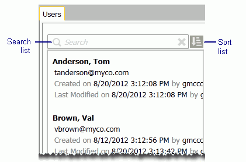

Use Lists
The windows used for configuring users, user types, groups, and templates
list all defined items. The following figure shows an excerpt from the
Users list.

Find Items in Lists
Several techniques can be used to find specific items in long lists,
regardless of which list is being viewed:
-
Scroll vertically and/or horizontally to see
all items and details.
-
Click the right border and drag to make it
wider.
-
Sort the list by clicking the sort button,
, and choosing from the different options, such as Created By. Select
the option again to reverse the sort order. (Reversing the order does
not apply to Default sorts.)
-
To find a specific item in a long list, start
typing the beginning of specific information in the search box until
the needed item is shown.
In addition to searching by name of the item
(user, group, etc.), you can search by such information as name of the
person who created or modified the item, part of the created/modified
date, or something in the notes. This is a plain text search that searches
these items in order.
Export List Details
Most lists can be exported to a .CSV file. The exported file will include
basic list details for each list item (for example, the .CSV file for
the user list will include all user names, associated managing clients,
created/modified details, etc.).
To a export a list in Eclipse Administration:
-
System-level list:
-
Log
in to Eclipse as a user who is a member of the Super Admin group.
-
Click
the Eclipse button,  ,
and select Administration.
,
and select Administration.
-
If
the System Administration pane
is collapsed, click the pane title to expand the pane.
-
Click
the item of interest (Users, Permission Templates, etc.).
-
Go
to step 3.
-
Case-level list:
-
Log
in to Eclipse as an Eclipse administrator.
-
Open
the needed case.
-
In
the Case View pane, click Case Administration, then select the item of
interest (such as Case Permissions).
-
At the bottom of the list (left pane of the
Case Administration tab), click Export to CSV.
-
Complete the Save As dialog box and click Save. The resulting file will include
the basic details for the selected items.